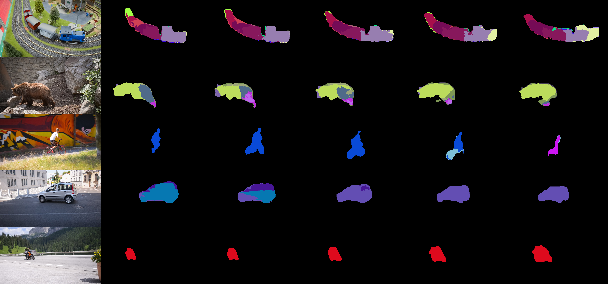

László Kopácsi, Áron Fóthi, Ádám Fodor, Ellák Somfai, András Lőrincz
We estimated the contribution of different factors in segmentation tasks by means of deep neural networks. Results indicated that texture and optical flow have similar power, but they seem not to add up. In turn, we decided to study the ‘Common Fate Principle’ of the 100 years gestaltism suggesting that elements that move together belong together. We developed a simple, fast, and efficient episodic segmentation method that – to some extent – resembles the ‘how system’ of the visual processing: we dropped every piece of information except motion, and started from pure optical flow estimations on 2D videos. For the sake of segmentation, we used a parallel and fast hierarchical supervoxel algorithm. We studied (i) grid topology in space and time, (ii) 2D grid in space and topology dictated by the optical flow in time, and (iii) added deep network based depth estimation from 2D images. We measure performances on episodic foreground-background segmentation task of the Davis benchmark videos. Results are competitive to state-of-the-art segmentation techniques.
We investigated the Common Fate Principle from gestaltism - which proposes that elements moving together belong together - and developed an episodic segmentation method based on motion, optical flow, and hierarchical supervoxel algorithm.
We used the novel deep learning PWC-Net method for the estimation of the optical flow. This method exploits a pyramidal computation that regularizes the optical flow by diminishing the aperture problem through the pyramid based spatial context.
For the sake of segmentation, we apply Boruvka’s algorithm, a highly parallel and hierarchical supervoxel method that can be seen as a special kind of spreading activation that finds the minimal spanning tree of a graph. In our case, the graph could be the grid on frames with vertices (pixels) connected with corresponding pixels of the previous and the next frame. Alternatively, pixels of the frames belonging to different time instants can be connected by means of the optical flow itself. We study both cases. We also add monocular depth estimation via a trained deep neural network.
For a 2D image the vertices of the graph are the pixels, and the edges connect neighboring pixels in the pixel grid. In a sequence of video frames the pixels of the frames form a 3D structure and elements of the structure become voxels. A contiguous group of similar voxels, which has both spatial and temporal extent, is a supervoxel.
We used two methods for computing supervoxels. In the first case, the topology of the graph was defined by neighboring pixels within each frame and the ‘neighboring’ pixels in time was also connected if they had the same spatial position. In the other case, the edges connecting pixels within a frame are the same as above, but the edges connecting pixels in neighboring frames follow the optical flow. The weights of the connections were determined by considering the absolute values of the differences of the optical flow components. In some experiments we also added the differences of depth estimations to the weights.
High quality examples for Common Fate Principle based segmentation. Middle row: case where occlusion spoils the result. Columns in order from left to right: RGB image, supervoxel masks on the 1st, 4th, 8th, 12th and 16th frames.
We presented that optical flow based segmentation has strength by its own. We also found that optical flow based information may spoil texture based segmentation in both supervised and unsupervised settings, possibly due to the noise content of optical flow estimation as well as to occlusions.
If you found our research helpful or influential please consider citing:
@INPROCEEDINGS{8851697,
author = {Kopácsi, László and Fóthi, Áron and Fodor, Ádám and Somfai, Ellák and Lőrincz, András},
booktitle = {2019 International Joint Conference on Neural Networks (IJCNN)},
title = {Common Fate Based Episodic Segmentation by Combining Supervoxels with Deep Neural Networks},
year = {2019},
pages = {1-7},
doi = {10.1109/IJCNN.2019.8851697}
}